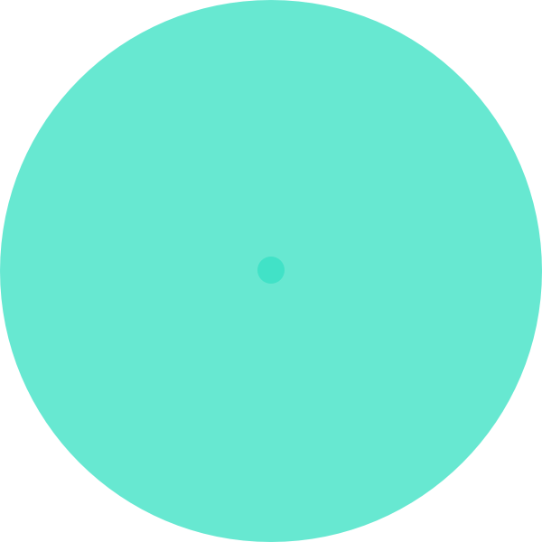

- 

Soundcloud Feed
Making Waves Underground
Fresh underground music podcast coming out at the end of every month from DJ's representing and pushing the underground scene within Aberdeen.
Soundcloud Feed
Making Waves Underground
Fresh underground music podcast coming out at the end of every month from DJ's representing and pushing the underground scene within Aberdeen.